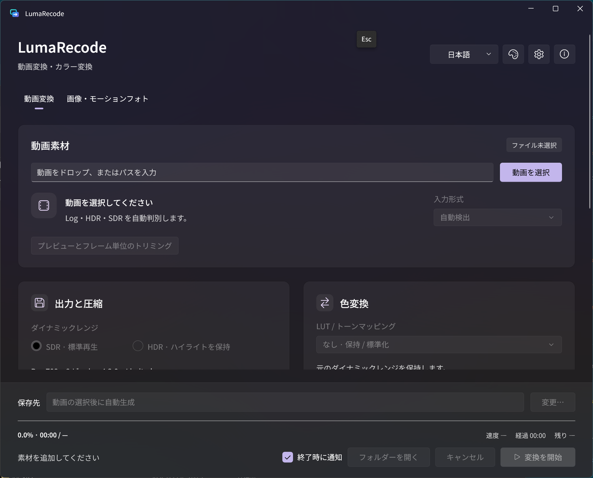
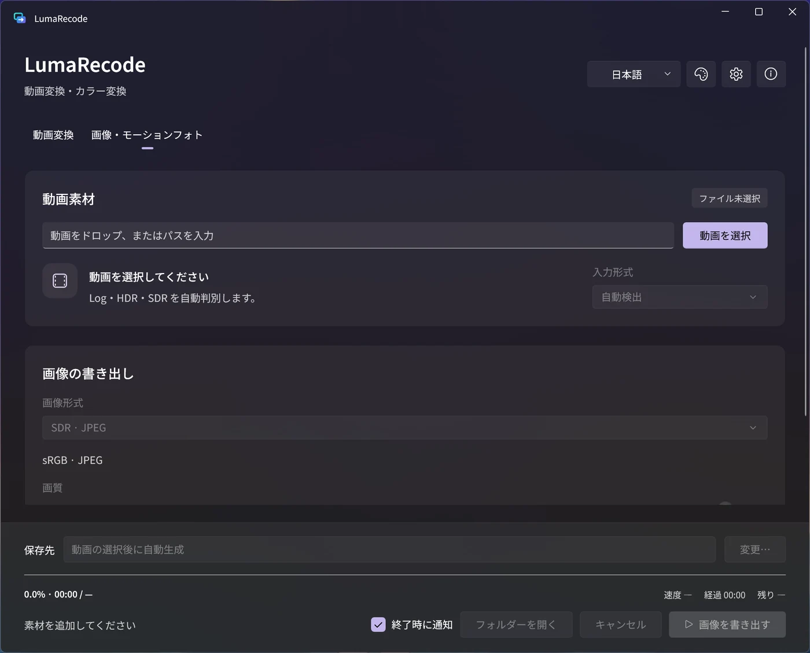

Windows と macOS · オープンソース
色にこだわる
動画変換。
Log や HDR の素材を変換し、フレーム単位でトリミング。動画から静止画やモーションフォトも書き出せます。

Log と HDR の色変換
カメラの Log、HLG、PQ を HDR または SDR に変換できます。エンコード前に色やメタデータを確認し、素材に合った LUT を選べます。
フレーム単位のトリミング
タイムラインを再生・スクラブし、前後のフレームを確認しながら書き出し範囲を正確に指定できます。
共有とアーカイブ
素早く共有するときは利用可能なハードウェアエンコーダーを、保存用にはソフトウェアエンコードを選べます。

好きなフレームを写真に。
Windows では Ultra HDR JPEG や Android のモーションフォトを、macOS では HDR HEIC、Adaptive HDR HEIC や Apple の Live Photos を書き出せます。
プラットフォーム別の機能を見るLumaRecode をダウンロード
- Windows 11 · x64 または ARM64
- Microsoft Store で配布される MSIX パッケージには Microsoft のデジタル署名が付与されます。Native AOT のポータブル ZIP、単体 EXE、MSI から選べます。FFmpeg 同梱版もあります。
- macOS 27 以降 · Apple シリコン
- 標準 DMG と、変換ツールを同梱した FFmpeg Full DMG を選べます。